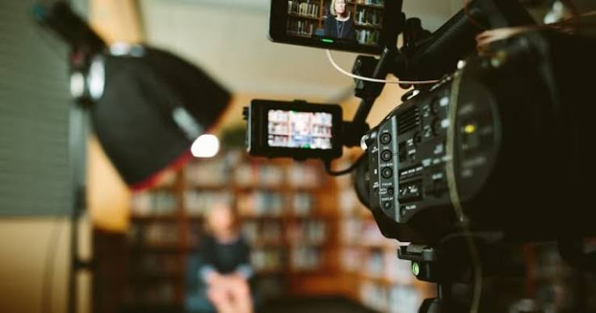

Grado en Comunicación Audiovisual
Universidad de Alcalá
Año 2026
Especialidad en manejo de mesa de control de radio, Tricaster de televión y diseño de experiencias interactivas
Graduada en CAV
Dentro de este portfolio cuento mi experiencia y habilidaes dentro del mundo audioviasual, así como proyectos realizados durante la carrera
Ver mis proyectosGraduada en Comunicación Audiovisual en la Universidad de Alcalá, con conocimientos musicales relacionados con el piano y sin experiencia laboral remunerada
En estos momentos siento gran interes en trabajar la estética, tanto de experiencias interactivos como el arte dentro de una producción audiovisual
Universidad de Alcalá
Año 2026
Especialidad en manejo de mesa de control de radio, Tricaster de televión y diseño de experiencias interactivas
IES Complutense, Alcala de Henares
Año 2023
Bachillerato de Ciencias Sociales
Se trata de una competición de robótica realizado por la UAH que es retrasnmitida en directo a través de Youtube. El primer año realicé el trabajo de cámara en directo, el segundo fui la encargada de las entrevistas a los participantes y el tercero me encargué de la foto fija
Participé en la promoción de 2024/2025/2026
Empresa: UAH y Eruobot
Se trata de un torneo de futboll internacional en el que participan tanto niños como jóvenes de varios pasises, entre ellos Brasil y Japón. En esta competición mi trabajo fue el de entrevistar a los participantes, gabar a la afición y la llegada de los equipos al aeropuerto y también fragmentos de los partidos para la publicidad del año siguiente
Participé en la promoción de 2024
Empresa: UAH y MadCup
Algunos de los proyectos y experiencias desarrollados durante mi formación.
| Año | Proyecto | Rol | Herramientas |
|---|---|---|---|
| 2026 | Cortometraje universitario para Cine Alcarria | Ayudnate de Dirección y realización del storyboard | Davinci Resolve |
| 2026 | Proyecto fotográfico universitario Brotes | Fotografía y música | Photoshop |
| 2024 | Video Musical | Directora, arte y actriz | Davinci Resolve |

Se trata de la exposición de fotografía en la que participé tanto como fotrógrafa como pianista
Año 2026
Ver proyecto Ver proyectoEmail Ver contacto